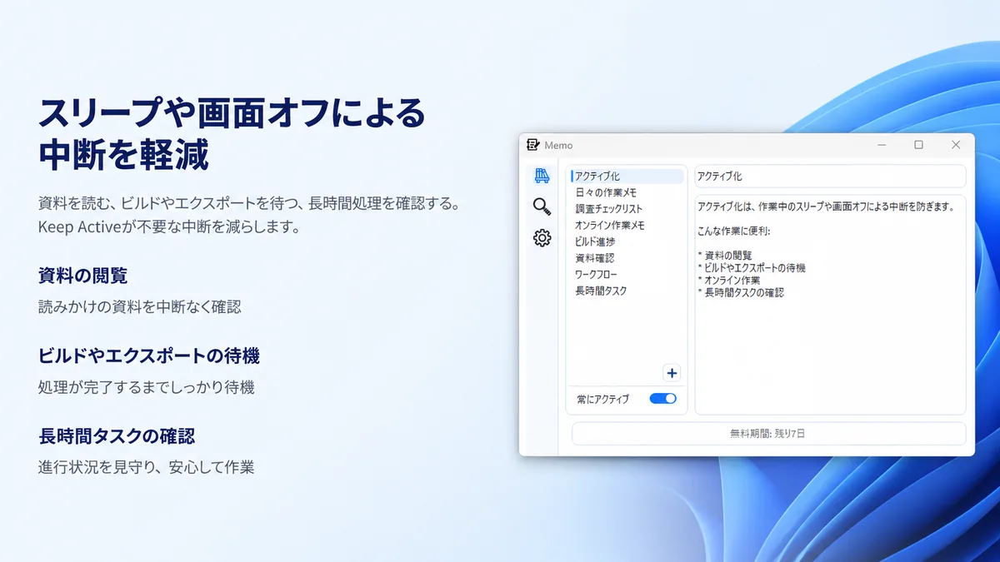
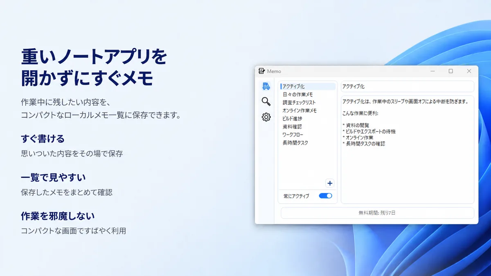
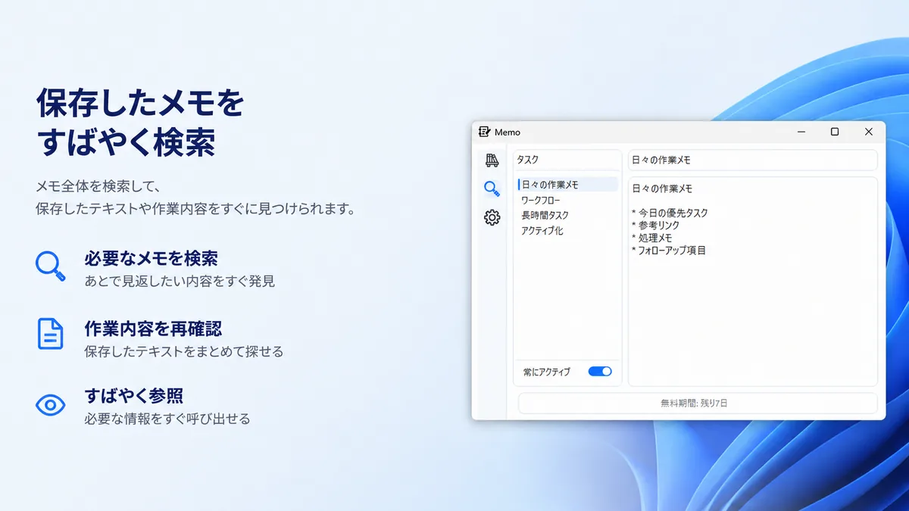
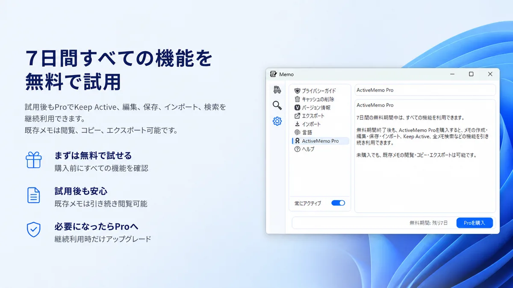

アクティブ化
資料閲覧、ビルド待ち、エクスポート待ち、長時間処理の確認中などに、スリープや画面オフによる中断を減らします。

集中したPC作業のために
ActiveMemoは、PCをアクティブに保つ機能と、ローカルメモ、検索、インポート、コピー、エクスポートをひとつにまとめたWindowsアプリです。
資料閲覧、ビルド待ち、エクスポート待ち、長時間処理の確認中などに、スリープや画面オフによる中断を減らします。
チェックリスト、リマインダー、作業メモ、確認事項を、重いノートアプリを開かずにコンパクトな画面へ残せます。
保存したメモをすばやく検索し、必要な内容をコピーしたり、既存メモを外部ファイルへエクスポートできます。
メイン作業を邪魔しにくい、コンパクトなメモ画面として使えます。

資料閲覧、検証作業、オンライン作業、長時間タスクの確認中に、PCをアクティブに保ちます。

思いついた内容、作業途中の確認事項、フォローアップ項目を、コンパクトな一覧で管理できます。

メモ全体を検索して、必要な作業内容や参照情報をすぐに見つけられます。
ローカル保存
ActiveMemoのメモはローカルに保存されます。必要なときはテキストをコピーしたり、既存メモをエクスポートできます。詳しい扱いはアプリ別プライバシーポリシーで確認できます。
無料試用とPro
試用後も、ActiveMemo Proでメモの作成・編集・保存、インポート、アクティブ化、全メモ検索などを継続利用できます。未購入でも、既存メモの閲覧・コピー・エクスポートは可能です。
7日間の無料試用後、月額または年額のサブスクリプションを選べます。表示価格は日本向けです。購入時の最終価格はMicrosoft Storeで確認してください。
月額
480円
日本向け価格。Microsoft Store経由で月ごとに請求されます。
年額
3,950円
日本向け価格。Microsoft Store経由で年ごとに請求されます。
